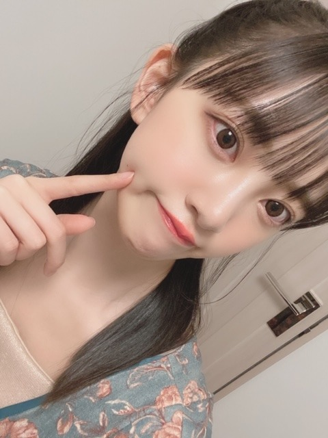
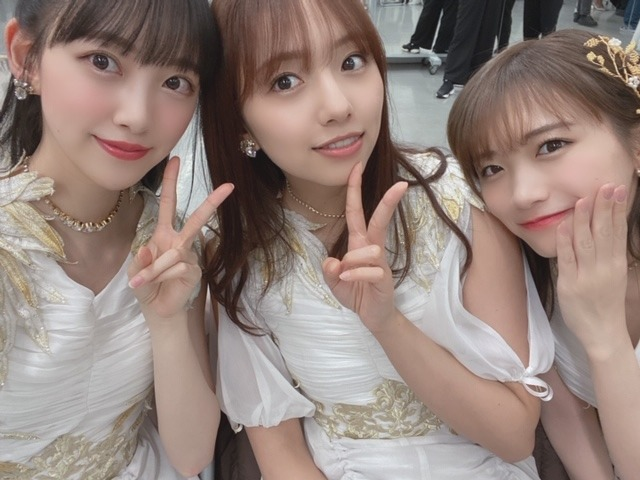

2020/0307Sat#2期生ライブ
今日、3月7日18時から
SHOWROOMさんにて
"幻の2期生ライブ特別番組"を生配信させていただきます✨
2期生ライブで「本当はこんなことをやりたかった」ということを、形を変えて番組でファンの皆さんにお届けする予定です☺︎
わーい
そして、番組内ではサプライズもあります✨✨
番組スタート時間は本来のライブの開演時間だった18時から!
本当は代々木第一体育館でライブを行う予定でしたが中止になったのでせめてもの皆さんへのお気持ちというか楽しんでいただきたく、今回やらせていただきますm(._.)m
インフルエンザでお休みの日奈子以外は全員出る予定です!
日奈子~( ; _ ; )
お大事にだよ。気持ちは一緒。

リハーサル中にね、マイムマイムをみんなで思い出して踊ってました((o(^∇^)o))笑
本当ノリがみんな良くて楽しいです
大好き~
是非、今日は18時に
SHOWROOMに集合です!✨

ロング丈のワンピースにハマり中。
あ、Mステの髪型アンケートありがとうございました!
トレンド入り嬉しかったです☺︎
ハーフアップにしたけどまた違う髪型もしていきますね~


では!
あ、配信中はぜひ
#2期生ライブ
をつけてたくさん感想呟いちゃってください♩
2020/03/07 09:24
コメント(362)
2期生ライブお疲れ様！全部見たよ〜
きいちゃんがいなくて残念だったけど、最高だった！
アナスターシャとゆっくりと咲く花めっちゃいい曲…
ゆっくりと咲く花はmvとかないよね… またいつかライブで披露して欲しいな〜 アナスターシャのmvは何回も見るね！
やっぱり2期生最強！不遇の2期って呼ばれてたけど、全然そんなことないよ！これからも2期生を愛し続けます！ずっと応援します！
きいちゃんがいなくて残念だったけど、最高だった！
アナスターシャとゆっくりと咲く花めっちゃいい曲…
ゆっくりと咲く花はmvとかないよね… またいつかライブで披露して欲しいな〜 アナスターシャのmvは何回も見るね！
やっぱり2期生最強！不遇の2期って呼ばれてたけど、全然そんなことないよ！これからも2期生を愛し続けます！ずっと応援します！
showroomみたよ
涙で埋め尽くされた~ライブ行けなかったから、生配信見れて幸せ！！本当に今日はありがとう。2期生キラキラしてました。今までで1番。すっごくすっごく泣きました。今まで本当によく頑張ってきたね。これからも頑張ろうね！私たちがみてるよ。
涙で埋め尽くされた~ライブ行けなかったから、生配信見れて幸せ！！本当に今日はありがとう。2期生キラキラしてました。今までで1番。すっごくすっごく泣きました。今まで本当によく頑張ってきたね。これからも頑張ろうね！私たちがみてるよ。
２期生ライブお疲れ様でした！showroomで最初から最後まで見ました！本当に楽しかったです♪
幻の２期生ライブだけど、私にとっては伝説の２期生ライブだったと思っています。これからも頑張って下さい！
幻の２期生ライブだけど、私にとっては伝説の２期生ライブだったと思っています。これからも頑張って下さい！
みおなちゃん二期生ライブ最高だったよー！
全員揃っては見れなかったけど感動した！！
今度は大きい会場でできることを祈っています
これからも頑張ってね
全員揃っては見れなかったけど感動した！！
今度は大きい会場でできることを祈っています
これからも頑張ってね
LIVE最高でしたー！
2曲ともめちゃめちゃ良かったです
けどそれ以上に2期生仲の良さが画面越しに伝わって来ました
改めて本当にいいメンバーだなと思いました！
2期LIVEが開催されることを願ってます
2曲ともめちゃめちゃ良かったです
けどそれ以上に2期生仲の良さが画面越しに伝わって来ました
改めて本当にいいメンバーだなと思いました！
2期LIVEが開催されることを願ってます
2期生の幻ライブめっちゃ感動した！！
ゆっくりと咲く花CDで出して欲しい！！お願いします
ゆっくりと咲く花CDで出して欲しい！！お願いします
二期生ライブ楽しかったです。
ぜひぜひ本当のライブも実現しましょう！よろしくおねがいします。
ライブ配信ありがとうございました！
ぜひぜひ本当のライブも実現しましょう！よろしくおねがいします。
ライブ配信ありがとうございました！
ほりっぴーーー！！！
配信観ましたよ～
とても良かったですよ～
２期生ばんざーいヾ(*´∀｀)ノヾ(*´ω｀*)/
配信観ましたよ～
とても良かったですよ～
２期生ばんざーいヾ(*´∀｀)ノヾ(*´ω｀*)/
2期生ライブみたよーゆっくりと咲く花、めっちゃいい歌ですよ～今度は会場でみたいよー
二期のリーダーは、未央奈だね‼️しっかりまとめてお疲れ様でした。４２万人が見てくれた実績を自信にもっと二期メンバーが選抜入りして、乃木坂を引っ張って行ってくれたらと思いました。みおっぴー最高でした。
ブログ更新ありがとう！！
2期生ライブ見てました！！ほんとに感動したし改めて2期生推してきてよかったなって思いました。幻のライブは40万人以上の人が見て2期生の力っていうものが証明されたと思います。次は配信ではなく大きな会場で！とても楽しく感動的な時間をありがとう！！みおなちゃん含め2期生は努力してきた力強いメンバーの集まりなのでほんとに大好きです！！新曲の題名も歌詞も2期生を連想させるもので2期生にしか歌えない曲だなと思いました。本当に配信ありがとう！！
2期生ライブ見てました！！ほんとに感動したし改めて2期生推してきてよかったなって思いました。幻のライブは40万人以上の人が見て2期生の力っていうものが証明されたと思います。次は配信ではなく大きな会場で！とても楽しく感動的な時間をありがとう！！みおなちゃん含め2期生は努力してきた力強いメンバーの集まりなのでほんとに大好きです！！新曲の題名も歌詞も2期生を連想させるもので2期生にしか歌えない曲だなと思いました。本当に配信ありがとう！！
二期生ライブ最高でしたー！！ありがとう！！！
笑いあり、涙あり、
二期生の力って本当にすごいと思う！！
順風満帆じゃないかも知れないからこそ、それでも前を向いて進んでいるみなさんを見て、勇気をもらえます。
今回、コロナの影響で気分が沈んでいる日本を少なくとも42万人の心に光を灯した二期生に感謝です！！
ますます、絆は強くなったね！！
乃木坂二期生！本物のアイドルだーーーー！！！！
笑いあり、涙あり、
二期生の力って本当にすごいと思う！！
順風満帆じゃないかも知れないからこそ、それでも前を向いて進んでいるみなさんを見て、勇気をもらえます。
今回、コロナの影響で気分が沈んでいる日本を少なくとも42万人の心に光を灯した二期生に感謝です！！
ますます、絆は強くなったね！！
乃木坂二期生！本物のアイドルだーーーー！！！！
二期生ライブ良かった～m(。≧Д≦。)m
新曲 二曲共泣かせますネ。号泣 ですわ‼
ですわ‼
沢山の方が観てくれて、二期生ファンとしてもうれしいです(*^▽^)/★*☆♪
一先ず お疲れ様でした！めったに泣かないメンバーの泣き顔も見れて、このライブの思いを共感できたことが嬉しいし、また切ない気持ちにもなりました。
堀ちゃん、二期生メンバーの皆様ありがとうございました‼＼(^o^)／
新曲 二曲共泣かせますネ。号泣
沢山の方が観てくれて、二期生ファンとしてもうれしいです(*^▽^)/★*☆♪
一先ず お疲れ様でした！めったに泣かないメンバーの泣き顔も見れて、このライブの思いを共感できたことが嬉しいし、また切ない気持ちにもなりました。
堀ちゃん、二期生メンバーの皆様ありがとうございました‼＼(^o^)／
SHOWROOM２期生ライブ✨
お疲れさま☺
42万人って凄い数やよ☺
２期生のみんな！
最高かよ☺
だったよ✨
アンコールあるなって思っていたから最後まで見ていて良かったよ☺
きっかけ✨
俺もなんとなく元気ない時に聴くと、勇気をもらえる！そういう曲かな？
そんなバカな、懐かしいね(笑)☺
やはり個人的に、生駒ちゃん、桜井ちゃん、真夏ちゃんのマネージャー役が好きでした(笑)
堀ちゃんも更に若いね☺
新曲のカップリング✨
そして２期生ライブの為の新曲✨
めっちゃエエ曲やん☺
感動していてたら、挨拶の時に絢音ちゃんの涙につられて俺もなんとなく、ウルットきました(笑)
喜怒哀楽、さらけていられる同期の２期生更に大事にね☺
堀ちゃん☺
かりんちゃん、いおりちゃんもありがたいね☺
いおりちゃん、髪の毛バッサリ切っていたね。
俺は好きかな？✨
今日は見ていて良かったです☺
感動ありがとう。
また次に繋げられるように、夢が実現出来る様になる事を願います☺
みんなホンマにお疲れさま✨
そして、ありがとうね☺
ではではまたね✨
体調気をつけてくださいね✨
ほなね、堀ちゃん☺
ありがとうね☺
お疲れさま☺
42万人って凄い数やよ☺
２期生のみんな！
最高かよ☺
だったよ✨
アンコールあるなって思っていたから最後まで見ていて良かったよ☺
きっかけ✨
俺もなんとなく元気ない時に聴くと、勇気をもらえる！そういう曲かな？
そんなバカな、懐かしいね(笑)☺
やはり個人的に、生駒ちゃん、桜井ちゃん、真夏ちゃんのマネージャー役が好きでした(笑)
堀ちゃんも更に若いね☺
新曲のカップリング✨
そして２期生ライブの為の新曲✨
めっちゃエエ曲やん☺
感動していてたら、挨拶の時に絢音ちゃんの涙につられて俺もなんとなく、ウルットきました(笑)
喜怒哀楽、さらけていられる同期の２期生更に大事にね☺
堀ちゃん☺
かりんちゃん、いおりちゃんもありがたいね☺
いおりちゃん、髪の毛バッサリ切っていたね。
俺は好きかな？✨
今日は見ていて良かったです☺
感動ありがとう。
また次に繋げられるように、夢が実現出来る様になる事を願います☺
みんなホンマにお疲れさま✨
そして、ありがとうね☺
ではではまたね✨
体調気をつけてくださいね✨
ほなね、堀ちゃん☺
ありがとうね☺
ブログ更新、ありがとうございます。
今きいちゃんのブログにコメントしてきました。
みんな泣いちゃて大変でしたが
ＭＣお疲れ様でした。
 万人。
万人。
これからも本番に向けて頑張ってください。
では。
今きいちゃんのブログにコメントしてきました。
みんな泣いちゃて大変でしたが
ＭＣお疲れ様でした。
これからも本番に向けて頑張ってください。
では。
未央奈ブログ更新ありがとう！
2期生ライブみたよー！
感動で後半涙出ぱなしだった！最高の思い出をありがとう
2期生ライブみたよー！
感動で後半涙出ぱなしだった！最高の思い出をありがとう
こんばんは。
2期生ライブ見たよー！
セトリとか、企画とか、どれも会場で見られたらもっと良かっただろうなーと思いながら見てました。でもそれくらい、熱意とか空気感が、画面越しにも伝わってきました！
アナスターシャもゆっくりと咲く花もとてもいい曲ですね。
今日の配信のおかげで、次に開催するときの2期生ライブがもっと楽しみになりました。
今日は本当にありがとう！2！
2期生ライブ見たよー！
セトリとか、企画とか、どれも会場で見られたらもっと良かっただろうなーと思いながら見てました。でもそれくらい、熱意とか空気感が、画面越しにも伝わってきました！
アナスターシャもゆっくりと咲く花もとてもいい曲ですね。
今日の配信のおかげで、次に開催するときの2期生ライブがもっと楽しみになりました。
今日は本当にありがとう！2！
生配信見ました！
それぞれのセンター曲の選曲も良かったし、二期生の新曲二曲も本当に素敵で涙でました。セトリもパフォーマンスも最高でした。みんなが輝いていて、その姿を見られて幸せでした。
配信でも素敵だったのだから会場でできたらもっといいいものになっていただろうなと思いました！！今後二期生ライブが開催できるのを楽しみにしています。ずっと応援してます！！！
それぞれのセンター曲の選曲も良かったし、二期生の新曲二曲も本当に素敵で涙でました。セトリもパフォーマンスも最高でした。みんなが輝いていて、その姿を見られて幸せでした。
配信でも素敵だったのだから会場でできたらもっといいいものになっていただろうなと思いました！！今後二期生ライブが開催できるのを楽しみにしています。ずっと応援してます！！！
showroom 見たよ
新曲 泣ける
やっぱり かりんちゃんと伊織 来てくれたね
早いうちに 2期ライブできるといいね。
新曲 泣ける
やっぱり かりんちゃんと伊織 来てくれたね
早いうちに 2期ライブできるといいね。
こんばんは。セブンだよ(ฅ'ω'ฅ)♪
幻の二期生ライブお疲れ様でした
楽しかったよ！
サプライズもあり
本当のライブだったらもっと楽しかったよね
でもそもそもチケット取れてなかったから
観れてラッキーでした
全員センター企画めっちゃ見たい！
皆素晴らしすぎる
生で見てたらきっと皆泣いてるよ
本当二期って素晴らしい
好きすぎる
次はもっと大きな会場でせめて2デイズやってほしい！
では、明日も1日楽しんで生きましょうd(@^∇ﾟ)/ﾌｧｲﾄｯ♪
おやすみおな☪️
幻の二期生ライブお疲れ様でした
楽しかったよ！
サプライズもあり
本当のライブだったらもっと楽しかったよね
でもそもそもチケット取れてなかったから
観れてラッキーでした
全員センター企画めっちゃ見たい！
皆素晴らしすぎる
生で見てたらきっと皆泣いてるよ
本当二期って素晴らしい
好きすぎる
次はもっと大きな会場でせめて2デイズやってほしい！
では、明日も1日楽しんで生きましょうd(@^∇ﾟ)/ﾌｧｲﾄｯ♪
おやすみおな☪️
2期生ライブ良かったよー、、
鼻水でたよー、、
鼻水でたよー、、
驚きましたよ～
#2期生ライブ
色々ありましたね。
新曲とか。
そんな中、ハイライトは･･･
乃木坂の詩での
観客の皆さんの
「サーバー頑張れ」（笑）
あ、山田さんに宜しく～（笑）
#2期生ライブ
色々ありましたね。
新曲とか。
そんな中、ハイライトは･･･
乃木坂の詩での
観客の皆さんの
「サーバー頑張れ」（笑）
あ、山田さんに宜しく～（笑）
2期生ライブ、showroomで見ました！！！
アナスターシャもゆっくりと咲く花も、本当に神曲で、感動して涙出そうでした！！ 42万人の方が見てるって本当にすごいね！！！ 2期生の皆がとても輝いていました！！ 実際の会場でも本当に見たいです！！
42万人の方が見てるって本当にすごいね！！！ 2期生の皆がとても輝いていました！！ 実際の会場でも本当に見たいです！！
showroomで、見ることができて本当によかったです！！
本当にありがとう、そしてお疲れ様です！！！
2期生最高！！！
アナスターシャもゆっくりと咲く花も、本当に神曲で、感動して涙出そうでした！！
showroomで、見ることができて本当によかったです！！
本当にありがとう、そしてお疲れ様です！！！
2期生最高！！！
2期生ライブShowroom観ました
お疲れさま
すごく楽しかったし、貰い泣きしちゃいました
ありがとう
お疲れさま
すごく楽しかったし、貰い泣きしちゃいました
ありがとう
みおなー！！
二期生ライブ…？うん。二期生ライブお疲れ様！
会場ではできなかったけど、Showroomでできて嬉しい！
私、大変申し訳ながら、拝見できませんでした。
自分のスマホにShowroomが入ってなくて、、
アプリをインストールすることを禁止されていて、、
号泣しまして、しました。
見たかった。本州に行くことができないから、ライブにも行けないから、だからこそ、Showroomで見ることを楽しみにして、家族のスマホを借りようとしていたのですが、忘れており、本当に申し訳ないです。
こんなんで、みおなーー！！、なんてバカみたいだよね。
これからも頑張って‼️
絶っ対に、ライブに行けるように！頑張る。
大好きです！
二期生ライブ…？うん。二期生ライブお疲れ様！
会場ではできなかったけど、Showroomでできて嬉しい！
私、大変申し訳ながら、拝見できませんでした。
自分のスマホにShowroomが入ってなくて、、
アプリをインストールすることを禁止されていて、、
号泣しまして、しました。
見たかった。本州に行くことができないから、ライブにも行けないから、だからこそ、Showroomで見ることを楽しみにして、家族のスマホを借りようとしていたのですが、忘れており、本当に申し訳ないです。
こんなんで、みおなーー！！、なんてバカみたいだよね。
これからも頑張って‼️
絶っ対に、ライブに行けるように！頑張る。
大好きです！
ライブができなかったのは残念ですが、showroomで観ることができるとのことで嬉しかったです。
途中から画像がかなり重くなって、頻繁に止まっていたので、よくわからなかった部分があり残念ですが、それだけ観覧者が多かったということなので、嬉しいことでもあります。
途中から画像がかなり重くなって、頻繁に止まっていたので、よくわからなかった部分があり残念ですが、それだけ観覧者が多かったということなので、嬉しいことでもあります。
こんばんは。セブンだよ(ฅ'ω'ฅ)♪
幻の二期生ライブお疲れ様でした
楽しかったよ！
サプライズもあり
本当のライブだったらもっと楽しかったよね
でもそもそもチケット取れてなかったから
観れてラッキーでした
全員センター企画めっちゃ見たい！
皆素晴らしすぎる
生で見てたらきっと皆泣いてるよ
本当二期って素晴らしい
好きすぎる
次はもっと大きな会場でせめて2デイズやってほしい！
では、明日も1日楽しんで生きましょうd(@^∇ﾟ)/ﾌｧｲﾄｯ♪
おやすみおな☪️
幻の二期生ライブお疲れ様でした
楽しかったよ！
サプライズもあり
本当のライブだったらもっと楽しかったよね
でもそもそもチケット取れてなかったから
観れてラッキーでした
全員センター企画めっちゃ見たい！
皆素晴らしすぎる
生で見てたらきっと皆泣いてるよ
本当二期って素晴らしい
好きすぎる
次はもっと大きな会場でせめて2デイズやってほしい！
では、明日も1日楽しんで生きましょうd(@^∇ﾟ)/ﾌｧｲﾄｯ♪
おやすみおな☪️
幻の２期生ライブすごくよかったです。
今回の配信は絶対２期生ライブの実現につながると思いました。
新曲は２曲とも好きです。
とても楽しい配信ありがとう。
今回の配信は絶対２期生ライブの実現につながると思いました。
新曲は２曲とも好きです。
とても楽しい配信ありがとう。
2日連続で生未央奈観られた
ただただ美しかったです
綺麗になってきている
好き。
SHOWROOMの生配信観ました。
めっちゃサイコーすぎて泣いちゃいました笑
できることなら今日休んでしまったきいちゃんも含めて、本当のライブで見たいです‼️
途中でやってたほりっぴーがまた見れて嬉しかったです笑
めっちゃ可愛かった〜❤️
これからも頑張ってください‼️
僕は今日の生配信で今後の二期生ライブがめっちゃ楽しみになりました。
今日はほんとにありがとうございました‼️
めっちゃサイコーすぎて泣いちゃいました笑
できることなら今日休んでしまったきいちゃんも含めて、本当のライブで見たいです‼️
途中でやってたほりっぴーがまた見れて嬉しかったです笑
めっちゃ可愛かった〜❤️
これからも頑張ってください‼️
僕は今日の生配信で今後の二期生ライブがめっちゃ楽しみになりました。
今日はほんとにありがとうございました‼️
こんばんは。
二期生ライブ、配信で見てましたよ。
素敵な時間をありがとうございました。本当に楽しかったです。
感動して、途中泣きそうになったし、本当に大好きだなと思いました。
ちゃんとした、2期生ライブ実現して欲しいです。
ずっと応援してます。
皆さんと出会って、本当に良かった。最高です！
改めて、今日は、本当にありがとうございました。
握手会等でお会いしましょう。他の2期生メンバーにも、ぜひお伝えください。よろしくお願いします。
2期生の皆さん、お疲れ様でした。
これからも頑張ってください。2期生ファイト！
二期生ライブ、配信で見てましたよ。
素敵な時間をありがとうございました。本当に楽しかったです。
感動して、途中泣きそうになったし、本当に大好きだなと思いました。
ちゃんとした、2期生ライブ実現して欲しいです。
ずっと応援してます。
皆さんと出会って、本当に良かった。最高です！
改めて、今日は、本当にありがとうございました。
握手会等でお会いしましょう。他の2期生メンバーにも、ぜひお伝えください。よろしくお願いします。
2期生の皆さん、お疲れ様でした。
これからも頑張ってください。2期生ファイト！
幻の2期生ライブ@Showroom観ました！！
とても楽しく観させていただきました。
でも後半は涙でちゃんと観れなかった
「あー、俺って2期生のこと乃木坂46のこと好きなんやなー」って改めて思いました」
新曲2曲ともめちゃくちゃ好きです！
「ゆっくりと咲く花」もいつか音源化されたらいいなと願っております。
しあわせな時間をありがとうございました！！
とても楽しく観させていただきました。
でも後半は涙でちゃんと観れなかった
「あー、俺って2期生のこと乃木坂46のこと好きなんやなー」って改めて思いました」
新曲2曲ともめちゃくちゃ好きです！
「ゆっくりと咲く花」もいつか音源化されたらいいなと願っております。
しあわせな時間をありがとうございました！！
Showroomお疲れ様！
みんなのセンター曲紹介まで粘って観ていたんだけど、どうしても外せない用事があってそれ以降見れなくてごめんなさい。
でも楽しさが伝わり、かりん伊織も来てくれたみたで、とても楽しくやれたみたいで良かったです。
ぜひ、BD化希望！！
みんなのセンター曲紹介まで粘って観ていたんだけど、どうしても外せない用事があってそれ以降見れなくてごめんなさい。
でも楽しさが伝わり、かりん伊織も来てくれたみたで、とても楽しくやれたみたいで良かったです。
ぜひ、BD化希望！！
こんばんは！みおちゃん！(^-^)/
いつも、今日も本当にお疲れ様です‼︎m(_ _)m
そして、そして‼︎生配信での二期生ライブも本当に、本当にお疲れ様でした‼︎m(_ _)m
みおちゃん、二期生ちゃんの皆さんが凄くキラキラしてて、アットホームで感動もあり、アンコールもちゃんとあって良いライブだったよ‼︎*\(^o^)/*
しかも今日は3月7日、書き換えると0307→307…そう！未央奈の日ーー‼︎おめでとう‼︎*\(^o^)/*
それでは。明日もみおちゃんが健康で、幸せでありますように…。今夜もゆっくり眠れますように…。
おやすみ。みおちゃん…。
昨日、今日とみおちゃんと時間を共有できて楽しくて、幸せでした‼︎本当にありがとうございました‼︎
純奈ちゃんがニャン！って言ったのも可愛かったね、まきでしたm(_ _)m
いつも、今日も本当にお疲れ様です‼︎m(_ _)m
そして、そして‼︎生配信での二期生ライブも本当に、本当にお疲れ様でした‼︎m(_ _)m
みおちゃん、二期生ちゃんの皆さんが凄くキラキラしてて、アットホームで感動もあり、アンコールもちゃんとあって良いライブだったよ‼︎*\(^o^)/*
しかも今日は3月7日、書き換えると0307→307…そう！未央奈の日ーー‼︎おめでとう‼︎*\(^o^)/*
それでは。明日もみおちゃんが健康で、幸せでありますように…。今夜もゆっくり眠れますように…。
おやすみ。みおちゃん…。
昨日、今日とみおちゃんと時間を共有できて楽しくて、幸せでした‼︎本当にありがとうございました‼︎
純奈ちゃんがニャン！って言ったのも可愛かったね、まきでしたm(_ _)m
堀ちゃん、今日もブログ更新ありがと〜
SHOWROOM、幻の2期生ライブ見たよ！
最高でした、ありがとう。
感謝の言葉しかでません
やはりアナスターシャ公開されたね、いい曲ですね2期生の絆の深さが伝わってくる様な曲だね。
それとなんとサプライズの新曲もう一曲！想定外でした。
ゆっくりと咲く花
これも良かったよ〜、涙しちゃいました。
とにかく最高の時間でライブ行った気持ちです。
それと堀ちゃんのホリッピも久々見れて感動、最高だったよ
金髪も似合うよ〜、あれをツインにしたらもう完璧です。
またやってね（笑）
またブログ楽しみにしてま〜す
では〜
SHOWROOM、幻の2期生ライブ見たよ！
最高でした、ありがとう。
感謝の言葉しかでません
やはりアナスターシャ公開されたね、いい曲ですね2期生の絆の深さが伝わってくる様な曲だね。
それとなんとサプライズの新曲もう一曲！想定外でした。
ゆっくりと咲く花
これも良かったよ〜、涙しちゃいました。
とにかく最高の時間でライブ行った気持ちです。
それと堀ちゃんのホリッピも久々見れて感動、最高だったよ
金髪も似合うよ〜、あれをツインにしたらもう完璧です。
またやってね（笑）
またブログ楽しみにしてま〜す
では〜
今回はこんな形でしたがいつかきっと。真のライブを！
マイムマイム
40年前に踊った。
足をウニョウニョ交差させるところ…アーッ青春！
40年前に踊った。
足をウニョウニョ交差させるところ…アーッ青春！
未央奈ちゃん、2期生生配信liveお疲れ様
午後6時のときは、お出かけしてて気づかなかった
ので、観れなかった 観たかった
観たかった
次回再度生配信liveがショールームやYouTube、
インスタグラムなどのSNSであったら是非観たいな
午後6時のときは、お出かけしてて気づかなかった
ので、観れなかった
次回再度生配信liveがショールームやYouTube、
インスタグラムなどのSNSであったら是非観たいな
Showroom観たよ。
新曲 とても良かったよ。
涙出そうだったよ。
やっぱり かりんちゃんと伊織 来てくれたね
いつか 2期ライブできるといいね。
新曲 とても良かったよ。
涙出そうだったよ。
やっぱり かりんちゃんと伊織 来てくれたね
いつか 2期ライブできるといいね。
未央奈ちゃん。お疲れ様です!2期生ライブ見ました。新曲良かったよ!泣いちゃた。是非ＣＤにして欲しいです。あらためて2期生ってすごいと思いました最高です!!
未央奈～ こんにちは
連日のブログ更新、ありがとうございます。
昨日の「Ｍステ」、もちろん見ましたよ。まいやんを中心としたほんわかとした「しあわせ感」もたっぷりと伝わってきました。
そして、今日は幻の「２期生ライブ」、楽しみにしていましたが、まさかこんな展開になるとは‥‥。はじめは、スタジオライブという形で、なんとなく「４６時間ＴＶ」を連想するそんな雰囲気でしたが、最後はただただ涙があふれ、いい年をして号泣してしまいました。
「ゆっくりと咲く花」、このライブのために作られた曲、そこには７年間の二期ちゃんたちの思いがびっしりと詰まっていました。
ライブが「中止」と決まった時の落胆ぶり、ずっとこの日のために練習を積み重ねてきたのに、よくよく報われない二期生‥‥、なんて思われていた‥‥。中止になったけど、こんな方法があるんだとこの企画を考えてくださった方に、「感謝」の気持ちでいっぱいです。気持ちを切り替え、今日のライブに臨んだ２期生のメンバーたち、何より快く配信下さったＳＨＯＷＲＯＯＭさん、インフルエンザに苦しみながらもブログを更新しその熱い思いを伝えてくれたきいちゃん、やっぱり今日も温かく見守ってくれたかりんちゃんと伊織、そしてずっと根底に流れている未央奈の「２期生愛」、もうすべてに「感動」です。
こったんの幸せとさらなる二期ちゃんたちの活躍ぶりをお祈りしております。もちろん、これからもずっと応援していますよ。
今日は、たくさんの感動、本当にありがとうございました。
連日のブログ更新、ありがとうございます。
昨日の「Ｍステ」、もちろん見ましたよ。まいやんを中心としたほんわかとした「しあわせ感」もたっぷりと伝わってきました。
そして、今日は幻の「２期生ライブ」、楽しみにしていましたが、まさかこんな展開になるとは‥‥。はじめは、スタジオライブという形で、なんとなく「４６時間ＴＶ」を連想するそんな雰囲気でしたが、最後はただただ涙があふれ、いい年をして号泣してしまいました。
「ゆっくりと咲く花」、このライブのために作られた曲、そこには７年間の二期ちゃんたちの思いがびっしりと詰まっていました。
ライブが「中止」と決まった時の落胆ぶり、ずっとこの日のために練習を積み重ねてきたのに、よくよく報われない二期生‥‥、なんて思われていた‥‥。中止になったけど、こんな方法があるんだとこの企画を考えてくださった方に、「感謝」の気持ちでいっぱいです。気持ちを切り替え、今日のライブに臨んだ２期生のメンバーたち、何より快く配信下さったＳＨＯＷＲＯＯＭさん、インフルエンザに苦しみながらもブログを更新しその熱い思いを伝えてくれたきいちゃん、やっぱり今日も温かく見守ってくれたかりんちゃんと伊織、そしてずっと根底に流れている未央奈の「２期生愛」、もうすべてに「感動」です。
こったんの幸せとさらなる二期ちゃんたちの活躍ぶりをお祈りしております。もちろん、これからもずっと応援していますよ。
今日は、たくさんの感動、本当にありがとうございました。
とんでもないミスしました。
コメント送る先を間違えてしまいました。
大変申し訳ない！
こんなタイミングであれですが、
二期生ライブ、絶対に実現させよう！！！
コメント送る先を間違えてしまいました。
大変申し訳ない！
こんなタイミングであれですが、
二期生ライブ、絶対に実現させよう！！！
たぶん初めてコメントします。２期生ライブ凄く良かったです。アンコールでの２期生ライブのために作られた楽曲、スミマセン曲名覚えていませが凄く感動しました。皆んなメチャメチャ可愛いかったです。琴子ちゃん、卒業するの寂しいけど元気で頑張ってほしいです。きーちゃん、インフルエンザで来れなかったのは残念だけど、かりんちゃんと伊織ちゃんも駆けつけてくれて２期生ってなんかいいよな〜って！乃木坂は大好きだけど、特に２期生は大好きです。推しメンも２期生が一番多いです。これからも２期生応援させてくださいね。
こんばんは
初めてコメントします。
今日の2期生ライブ@showroomお疲れ様でした。楽しく見させて頂きました。代々木でのライブは中止になってしまいましたが、別の形でライブができて良かったですね。僕は今まで１度も会場でのライブに行ったことがなかったのですが、今日の2時間という短い時間ではありましたがライブに行った気になれてとても楽しかったです。
『アナスターシャ』の解禁もありましたね！すごい良い曲だなーと思いました。早速MVも見て、何回も聴きました。バラバラにされた2期生メンバーが再会していくシーンを見て、2期生の硬い絆を感じました。
今回は代々木でのライブは中止となってしまいましたが、言霊という言葉があるように言葉にすれば必ず叶うと僕は信じてます。
幻ではなくいつか現実になることを願ってます。これからも頑張って下さい。ずっと応援してます。
初めてコメントします。
今日の2期生ライブ@showroomお疲れ様でした。楽しく見させて頂きました。代々木でのライブは中止になってしまいましたが、別の形でライブができて良かったですね。僕は今まで１度も会場でのライブに行ったことがなかったのですが、今日の2時間という短い時間ではありましたがライブに行った気になれてとても楽しかったです。
『アナスターシャ』の解禁もありましたね！すごい良い曲だなーと思いました。早速MVも見て、何回も聴きました。バラバラにされた2期生メンバーが再会していくシーンを見て、2期生の硬い絆を感じました。
今回は代々木でのライブは中止となってしまいましたが、言霊という言葉があるように言葉にすれば必ず叶うと僕は信じてます。
幻ではなくいつか現実になることを願ってます。これからも頑張って下さい。ずっと応援してます。
未央奈 二期生ライブお疲れ様でした配信見ました。最高に良かったです感動しました。アナスターシャのMV撮影現場は僕の地元ですよ階段辛くなかった？めちゃ風あったんじゃない旗は感動しました
二期生ライブお疲れ様でした配信見ました。最高に良かったです感動しました。アナスターシャのMV撮影現場は僕の地元ですよ階段辛くなかった？めちゃ風あったんじゃない旗は感動しました
アナスターシャmvみめした、
正直、ビビるくらい神曲でした。MVも次場らしかっです。
本当にすべてが最高でした！
正直、ビビるくらい神曲でした。MVも次場らしかっです。
本当にすべてが最高でした！
アナスターシャずっと再生してるよ
２期生ライブ配信で見てから、ホント好きな曲になったよ生で聞ける日が楽しみ！
２期生ライブ最高でした！泣きました！感動しました！こりんちゃんと伊織ちゃんと並んだ姿を見て、さらに感動しました！
２期生最高！未央奈大好き
２期生ライブ配信で見てから、ホント好きな曲になったよ
２期生ライブ最高でした！泣きました！感動しました！こりんちゃんと伊織ちゃんと並んだ姿を見て、さらに感動しました！
２期生最高！未央奈大好き


チャァオ～～!☆彡
プリンセスみおちゃん❕❤️❤️❤️❤️❤️笑顔
２期生ライブ生配信見たよぉ～～⤴️⤴️❕❤️❤️❤️❤️❤️笑顔
スタート21万人！？の人が見て
最後には40万人も見てくれてすごいねぇ❕❤️❤️❤️❤️❤️笑顔
かりんちゃん、伊織ちゃんも駆け付けてくれて良かったねぇ❕❤️❤️❤️❤️❤️笑顔
２期生ライブ生配信できて、本当良かったです❕❤️❤️❤️❤️❤️笑顔
明日はゆっくり休んでねぇ❕❤️❤️❤️❤️❤️笑顔
お疲れ様でした～⤴️⤴️⤴️❕❤️❤️❤️❤️❤️笑顔
ヾ(@゜▽゜@)ノ
☆おすまし！より☆彡